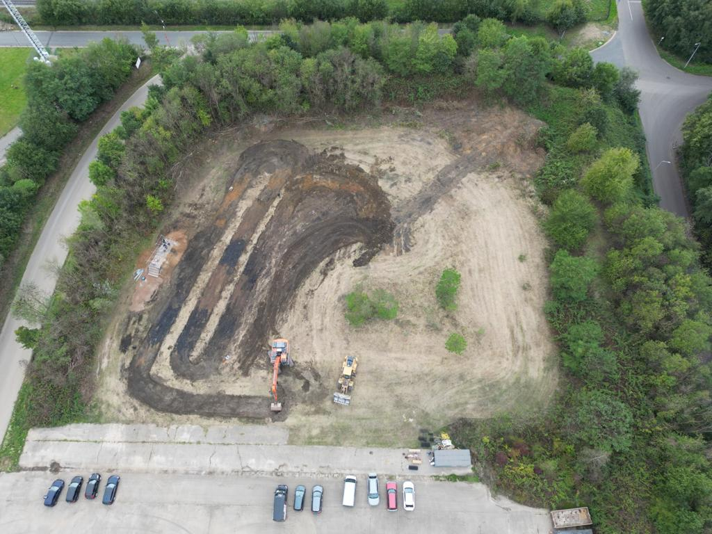
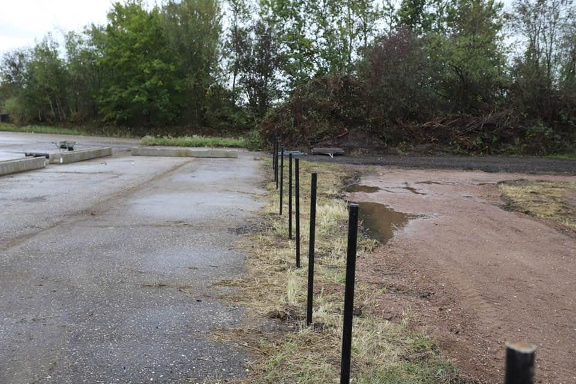
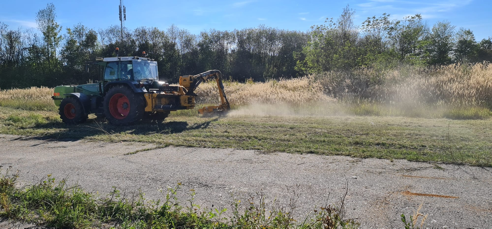
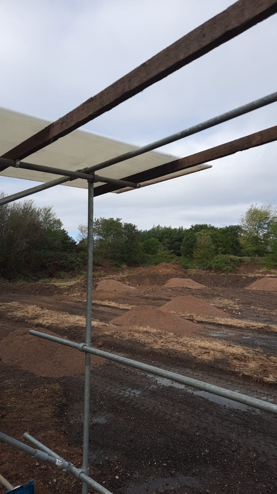
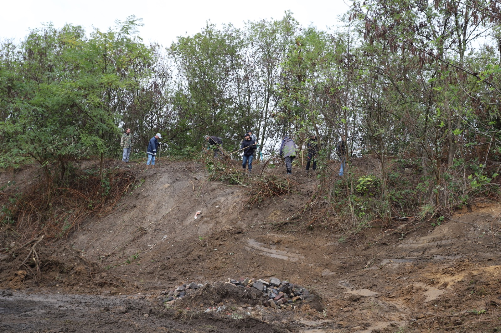

In 2020 zijn wij met een groep vrienden op vakantie geweest waarbij ook enkele RC-auto's werden meegenomen. Het RC-virus werd hier al snel overgedragen en kort na deze vakantie had één ieder al snel één of meerdere RC-auto's aangeschaft.
Tijdens de zoektocht naar een locatie om te kunnen rijden kwamen wij al snel uit op het grasveld bij sportpark Strijthagen (naast het MTB parcours). Al snel bleek dat hier meer hobbyisten met hun RC-auto hun rondje kwamen rijden.
Dit groeide al snel uit tot een wekelijkse samenkomst op zondag, en de groep hobbyisten én toeschouwers werd steeds groter.
We kregen ook steeds meer aandacht van de media, o.a. RTV Parkstad, Omroep Landgraaf en L1 hebben ons één of meerdere keren bezocht en hebben eraan meegeholpen dat onze activiteiten steeds meer bekendheid kregen.
Door de steeds groter wordende belangstelling en omdat wij één en ander op een goede, gezellige en veilige manier wilden faciliteren hebben wij al snel onze vereniging RC045 opgericht.
In 2022 kregen we de mogelijkheid om een mooi stukje terrein in Eygelshoven te huren. Na heel hard ploeteren konden we daar eindelijk onze RC-baan realiseren.
Nog steeds voegen we optimalisaties en veranderingen door aan onze baan, het is nooit af.





